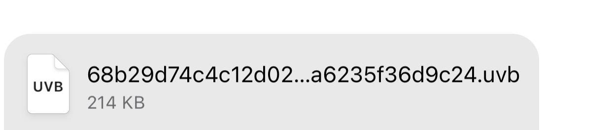
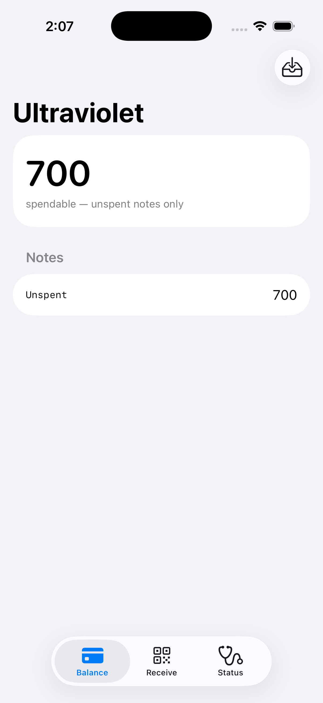
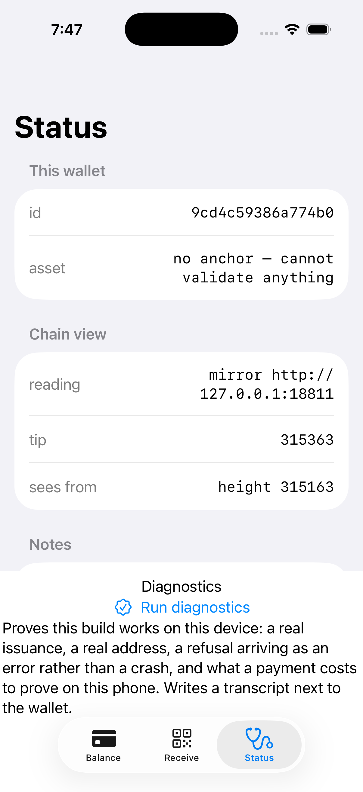

Read this first: research project, not money
Do not put value on this. It is a protocol design plus a working core, and the proof circuit is hand-written and has never been professionally audited. Volunteer adversarial review has twice found ways to create money from nothing. Both are fixed; the standing assumption is that more remain.
The full history — every gap found, who found it, and what it cost — is in the journal. A project asking you to trust its arithmetic owes you its failures more than its successes, so they are written up there without varnish.
Track it: audit issue #13 · open problems.
Straight answers
The questions you're already asking
Is there a coin to buy?
Not from us. There is no Ultraviolet token, no premine, no ICO, no VC bag, and nothing we hold that you could buy. Ultraviolet is a protocol, like Lightning.
But it would be slippery to stop there, because issuing assets is what it is for. Anyone can create one, and those are real coins — somebody else's. What the protocol gives you is the ability to count them from Bitcoin rather than take the issuer's word, and the ability to refuse any coin whose creation was never published. It does not make an issuer trustworthy. Read the chain.
Fees are paid in bitcoin, and only in bitcoin. There is no second asset you must hold to use the protocol — no gas token. Sending and issuing each publish one ordinary Bitcoin transaction and pay its ordinary fee. Everything else is free, including the two people usually assume are not: receiving a payment, and proving one. Proving happens on your own device in about two tenths of a second.
uv fees prints the whole schedule at your node's current rate, with the
free operations listed rather than omitted — a payment is about 190 vbytes and an issuance
about 13 more, which is exactly its extra data. Those sizes are measured against a real
node on every CI run, not typed into this page.
Do I have to trust anyone?
Not for the money itself. One job needs a referee: deciding which spend came first. Bitcoin does that job, and your own wallet checks everything else for itself. One honest hedge: deciding which came first takes a view of the chain. A phone that asks someone else's server for that view is trusting the server to be complete, and is leaking which coins it holds. Run it against your own node and the answer is genuinely no.
How do I know how many coins exist?
You add them up from Bitcoin. Creating coins costs a confirmed Bitcoin transaction — a
small mark naming the asset and the amount in the open — and uv supply --asset X
reads them back and sums them. Nobody is asked; the issuer is not asked. Coins whose creation
was never published are refused by every wallet, so an issuer cannot quietly mint on the
side, and the total you get is the total that exists.
The honest limit, and it is smaller than it was: nothing stops a stranger publishing a mark that names your asset. It creates no spendable coin — they would need a secret only the real owner has — but it does sit there bearing the name. So the tool counts records it can vouch for separately from ones it cannot, and never adds the two together.
Does it change Bitcoin?
No soft fork, no new opcodes, no covenants. Each payment leaves one 64-byte record in an OP_RETURN — a small note attached to an ordinary Bitcoin transaction. Bitcoin doesn't need to know it's there.
Does it bloat the chain?
Records live in those OP_RETURN notes. Every node can prune them, and they never join the set of unspent coins a node must track. Millions of transfers add zero to the state your node keeps forever. Block space is another matter, and we'll be honest: one payment's transaction is about the size of an ordinary payment (~143–186 vbytes, measured). The big savings come from batching many payments into one 32-byte root, a single hash that stands for all of them. Everything fits under OP_RETURN size limits, including the strictest one anyone has proposed.
Is it self-custody?
Yes, for the coin itself. Your keys, on your device. No custodian, no bridge holding your funds, nobody who can freeze the note. Lose the seed, lose the coins, same as Bitcoin. But: if the asset stands for something off-chain, like a dollar or a share, the issuer still controls the reserve. They also decide whether they'll redeem for you. We remove the custodian from holding and sending, not the issuer from backing.
What about quantum?
The day a quantum computer cracks Bitcoin's signatures, your Ultraviolet assets are still safe. They're locked with hash-based keys, which quantum barely dents. Quantum-safe, not quantum-proof — exactly what that means.
Real, or just a paper?
Real code, and real payments on a real Bitcoin network. See it on signet: 64 bytes, 374 sats of fee, published by the current stack. Open source (MIT). Honest caveat: research project, no professional audit. Volunteer adversarial review has read the proof circuits — and found a way to forge payments outright, which is fixed and written up in the journal. Do not put value on this.
What's it actually for?
Putting real assets on Bitcoin rails you control: a dollar stablecoin, a tokenized share. No bank, no altcoin chain. Tether already does a version of this. Ultraviolet is designed to make it lighter, private, and quantum-safe.
The whole thing, in three pieces
Your coins, a stamp, and a receipt
Notes
Your money is a set of private "notes" kept on your own device. Each note holds an amount, an owner, and a secret random value that makes it unguessable. No relay, no chain, no third party ever sees them. Once a coin is yours, spending it reveals nothing new to anyone. (The person who paid you knows the note they built for you. That is the one unavoidable exception.)
A 64-byte mark on Bitcoin
To spend, your wallet drops a tiny 64-byte stamp on Bitcoin. The first stamp for a given coin wins, and that's what stops double-spends. No Bitcoin output to own, no script to run. You can even receive with an empty Bitcoin wallet.
A proof anyone can check
Each hop in a payment's history carries one compact proof that the hand-off was legit. That's about 117 KB per hop, checked in under two milliseconds. No party or amount ever appears in the public record. The proof now hides the amounts and the secrets behind them, which is what zero-knowledge means, so the person you pay can't fish fragments of the sender's secrets out of it. Hidden amounts are the payment format, not an option. Accepting a payment safely also means confirming that each past hop settled on Bitcoin — one quick lookup per hop. A formal model caught us skipping that, and it is now enforced.
One limit worth knowing before you rely on it. The hiding is done by the sender's software, and a receiver cannot check that it was done properly — only that some hiding was applied, not that there was enough of it. So the amount privacy of a coin that has changed hands several times is only as good as the least careful wallet that ever held it. This is a standing limitation of the design, not a to-do, and it is one of the things the external review is being asked about.
That's the whole system. Everything below is just detail on how these three pieces move around.
How a payment actually works
Tap send. Done in seconds. Locked by Bitcoin.

The filename is the payment's spend marker; the 214 KB is mostly the zero-knowledge proof. One honest caveat stays: this rode signal-cli as a linked device — the chat app itself doesn't exist yet.Every payment goes to Bitcoin. There is no faster side-path and no channel to open, close, or keep funded — which also means there is nothing to watch while you are offline. The trade is honest: you wait for a Bitcoin block. The full story is the payments spec.
Why this isn't a shitcoin
No token means there's nothing to pump. Ultraviolet is plumbing: a way to put real assets on Bitcoin rails you actually control. It rides on Bitcoin the way Lightning does — using it, not replacing it, not asking permission. One 64-byte OP_RETURN per payment, prunable, and nothing added to the set of unspent coins every node tracks forever. The chain stays lean. You stay sovereign.
The wallet app, running
The command-line tool is no longer the only surface. This is a SwiftUI wallet on iOS, built on the same Rust command layer the CLI uses — not a reimplementation, a second front end on one set of rules. These are screenshots of it running, not mockups:


Captured 29 July 2026 from a Release build in the iPhone 17 Pro
simulator. The app carries a self-test that runs a real issuance and a real address through
the same door and logs PASS, because a screenshot cannot tell you the thing
underneath works. Timings wait for hardware: a simulator runs on the Mac's own chip, so a
simulator number is a Mac number.
Show me it runs
It runs, on real Bitcoin
The current stack has settled a full issuer → Bob → Carol chain on public signet. Each payment was one 64-byte OP_RETURN, and the receiver checked every hop of the coin's history against the live chain. A double-spend attempt then produced no transaction at all, because the wallet replayed its original signed payload instead of signing a second one.
| Step | On public signet | Result |
|---|---|---|
| issuer → Bob, 300 | e284c5e7… | Bob verified & accepted |
| Bob → Carol, 100 (two hops) | f8a81f05… | Carol validated both hops |
| issuer re-spends a spent note | no transaction — payload replayed | refused; key signed once |
Balances closed at 700 + 200 + 100 = the original 1000. Proving took ~0.23 s per hop, so the only waiting was Bitcoin's. The full journal → has every milestone, including the measurements that killed earlier designs and the bugs found along the way.
More questions
The ones that need a longer answer
"Quantum-safe" — what does that actually mean here?
Every asset protocol on Bitcoin today secures ownership with the same elliptic-curve signatures Bitcoin uses. That is true of RGB, Taproot Assets, all of them. A big enough quantum computer breaks those signatures. Ultraviolet doesn't use them for ownership at all. The honest breakdown, part by part:
- Stealing or forging your coins: safe under assumptions about hash functions alone, the most battle-tested, conservative crypto there is. This is the part that matters most, and it's the strongest.
- Keeping payments private in transit: post-quantum encryption paired with today's crypto, so an attacker has to break both. If it ever fell it would leak privacy. It would never let anyone take your funds — nothing an encrypted payment carries can move a coin.
- We say quantum-safe, never quantum-proof. It rests on well-studied assumptions, not a mathematical guarantee. And it still needs Bitcoin itself to survive its own quantum upgrade someday.
All of that is a claim about the cryptography, and nothing more. It says nothing about whether the protocol logic around it is correct. For that, see the working code and its open findings below.
Why write the proof circuit by hand instead of using a general-purpose one?
Because a payment does one job, and a circuit built for that one job is small enough to run on a phone. Ours proves a payment in about 0.02 seconds using 5 MB on a laptop, and on the cheapest iPhone Apple sells — in a signed app, not a benchmark rig — 0.006 to 0.012 seconds using 1 MB beyond what the app already uses. Your phone never hands the payment's secrets to a server to get them proved, because it does not need to.
General-purpose provers let you write the protocol once in normal code and run that same code inside a proof. It is a real advantage and we used one for a year. We measured what it cost and replaced it; the numbers, and the six things we believed that measurement disproved, are on the benchmarks page.
The honest cost of the trade: a general-purpose prover's soundness is one artifact that many people have reviewed, and ours is ours. A hand-written circuit is only sound if every column in it is constrained — an unconstrained one is a free variable, and a free variable in the wrong place mints money. We hold that with two mechanical checks that must stay at their headline number, and with an outside review that has not happened yet. Until it has, treat the cryptography as unreviewed.
One thing that came out better than expected: hiding the amounts costs almost nothing — a slightly larger proof, no measurable extra time — so hidden amounts are simply the payment format rather than an option.
The full evidence, including six things we believed and measurement disproved, is on the benchmarks page — with the commands to re-run all of it.
How does this compare to RGB, Taproot Assets, and the rest?
They're cousins, not strangers. RGB, Taproot Assets, Shielded CSV and Ultraviolet all keep asset data off-chain and use Bitcoin to stop double-spends. The differences sit in three places: what owns the coin, how much work it is to receive, and who gets to see your history.
| RGB v0.12 | Taproot Assets | Shielded CSV | Ultraviolet | |
|---|---|---|---|---|
| Ownership | A Bitcoin UTXO | A Bitcoin UTXO | Classic keys | Hash-based keys |
| Cost to receive | Replays whole history | Proofs grow forever | Flat | Flat proof + lookup, per hop |
| Need a UTXO to receive? | Yes | Yes | No | No |
| Amounts hidden | No | No | Yes | Yes |
| Amounts hidden from receiver | No | No | Yes | Yes — the history itself is visible (the receiver validates it); hiding the history too is the accumulator, future work |
| Survives quantum | ✗ | ✗ | ✗ | ✓ |
| Shipped & in production | Yes | Yes | Paper | Proof-of-concept |
Honest bottom row: they ship today and we don't yet. What we bring is the one part none of them can retrofit: ownership that isn't tied to a Bitcoin key a quantum computer can crack. Full field survey →
Taproot Assets already has USDT live on Lightning. Why bother?
Fair question. Taproot Assets is the strongest thing shipping. It's at v0.8.0, USDT has been live on Lightning through it since March 2026, and it has real multi-asset channels today. If you need trustless instant settlement to strangers this quarter, use it.
Three things it can't do, by design:
- Its coins live in Bitcoin UTXOs, the ordinary unspent chunks of bitcoin in a wallet. So ownership is exactly the elliptic-curve key a quantum computer breaks, one UTXO per holder, an on-chain spend per transfer. There's no post-quantum roadmap for it, because the model doesn't allow one.
- Its proofs grow with every hop, and each recipient re-checks the whole history. We re-check the history too. The difference: each of our hops is a fixed-size proof that keeps the amounts hidden.
- Everyone you pay sees the history and the amounts. There's no zero-knowledge layer, and none planned.
The argument lands hardest for real-world assets. A tokenized 10-year bond issued in 2026 has to stay unforgeable into the mid-2030s, right through the window every quantum estimate argues about. Payments can migrate when the threat shows up. A long-dated asset has to outlive it.
Taproot Assets is what excellent engineering achieves inside the classical UTXO model. Ultraviolet is what becomes possible by leaving it. Full head-to-head →
Doesn't BIP-110 kill this? Isn't it "chain spam"?
No. We comply with every BIP-110 rule today. BIP-110 is the proposed soft fork that caps arbitrary data: OP_RETURN at 83 bytes, most new outputs at 34, data pushes at 256. It's aimed at inscription and Ordinals bloat. Two record types now, since creating an asset writes a bigger one than spending does — it carries the asset's name and the amount in the open, which is what lets anyone count the supply.
Where to read the design
The specification is a whitepaper: SPEC.md — the problem, the design, the threat model, cryptographic foundations, and an honest limitations section, with a constraint map for auditors and a running record of what was measured and what was deleted. It was thirteen chapter files that drifted out of step with each other; now it reads top to bottom.
Alongside it, the one list of what is unfinished: open problems. Several chapters were deleted rather than carried, because they described mechanisms nobody had built; the journal has each one and the reasoning. What is left describes only what exists.
Long-form versions of the FAQ answers above: The Field (the whole landscape) · vs Taproot Assets. Plus the glossary.